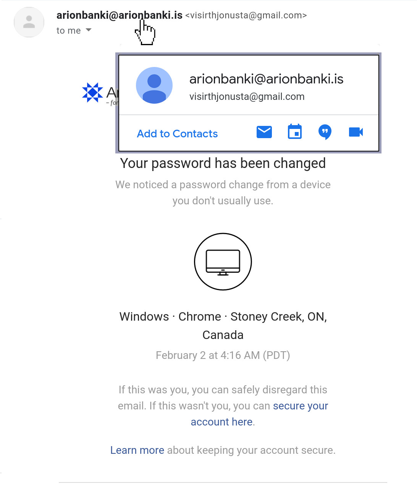

<ion-content class="ion-padding ion-text-center"fullscreen [scrollY]="false">
	<ion-slides #slides pager="true" [options]="slideOpts">

        <ion-slide>
          <div class="slide">
            <h2>Welcome</h2>
            
            <p>You've just received an email from Arion Bank about a password change. It looks
              like someone from Canada has changed your password. Let's take a closer look at
              the email.</p>
          </div>
            <ion-footer>
				<ion-item lines="none">
				  <ion-button size="default" class="primaryAction" slot="end" color="light" fill="clear" (click)="next()">{{'next' | translate }}</ion-button>
				</ion-item>
	  		</ion-footer>
        </ion-slide>

        <ion-slide>
          
          <p>First, let's double check the URL by hovering the mouse over the link (without
            clicking!). Just because a link says it's going to send you to one place,
            doesn't mean it's going to. Notice that the link points to 'ari0nbanki.is',
            instead of 'arionbanki.is'.</p>
           <ion-footer>
				<ion-item lines="none">
				  <ion-button size="default" class="primaryAction" slot="end" color="light" fill="clear" (click)="next()">{{'next' | translate }}</ion-button>
				</ion-item>
	  		</ion-footer>
        </ion-slide>

        <ion-slide>
          
          <p>Now, let's check who the sender is. Hover your mouse over the sender. The real
            sender is 'visirthjonusta@gmail.com', pretending to be
            'arionbanki@arionbanki.is'.</p>
           <ion-footer>
				<ion-item lines="none">
				  <ion-button size="default" class="primaryAction" slot="end" color="light" fill="clear" (click)="next()">{{'next' | translate }}</ion-button>
				</ion-item>
	  		</ion-footer>
        </ion-slide>

        <ion-slide>
          <p>Info book:
            If you get stuck, you can always check out the information book in the 
            top right corner of your screen. There you can find hints about the challenge </p>
           
          
          <p><b>Ionic Appflow</b> is a powerful set of services and features built on top of Ionic Framework that brings a totally new level of app development agility to mobile dev teams.</p>
          <ion-footer>
				<ion-item lines="none">
				  <ion-button size="default" class="primaryAction" slot="end" color="light" fill="clear" (click)="next()">{{'next' | translate }}</ion-button>
				</ion-item>
	  		</ion-footer>
        </ion-slide>

        <ion-slide>
          <h1 class="readyText">{{'ready_to_go' | translate}}</h1>
           <ion-button class="startButton" (click)="assignment()" fill="clear">{{'start_assignment' | translate }} <ion-icon slot="end" name="arrow-forward"></ion-icon></ion-button>
        </ion-slide>

      </ion-slides>
</ion-content>
